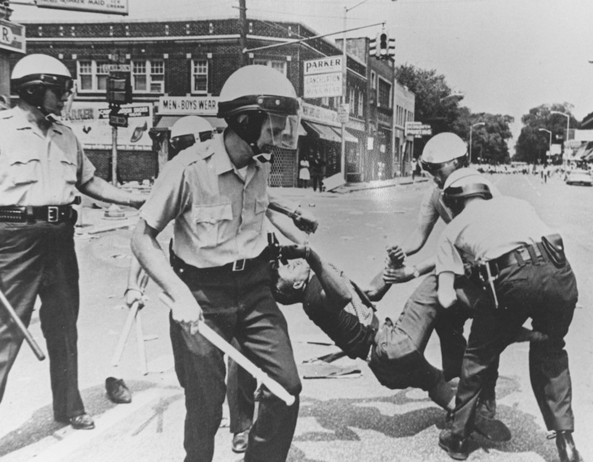
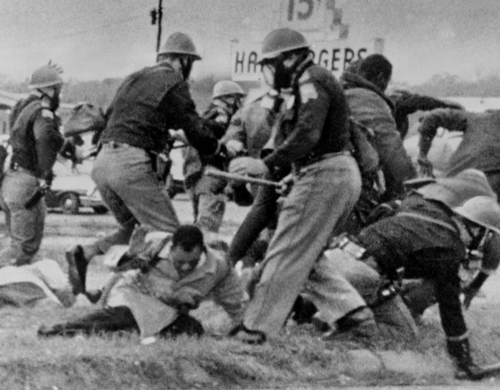
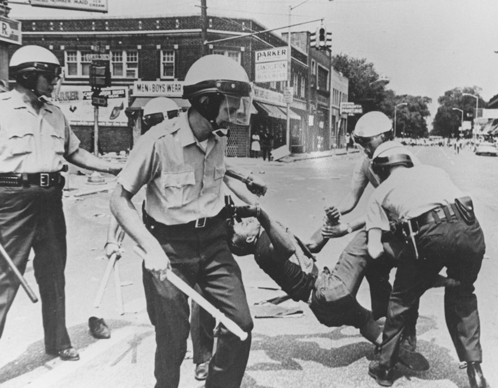
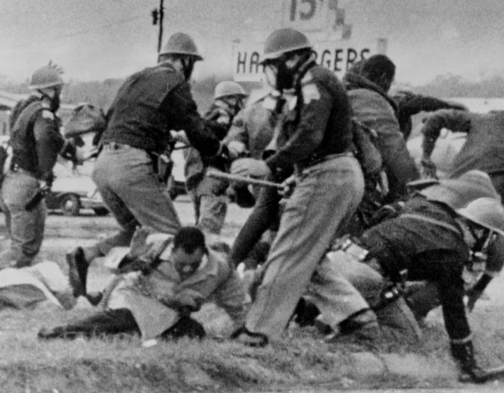
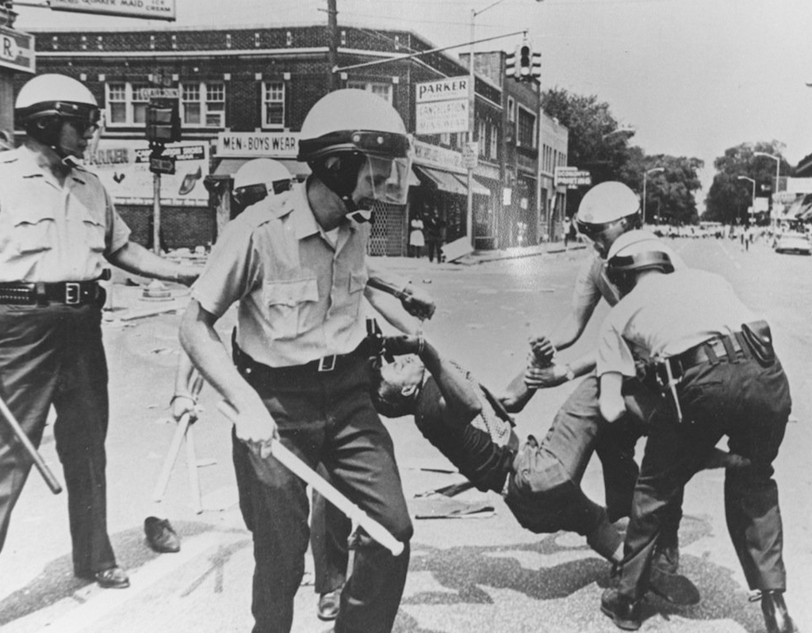
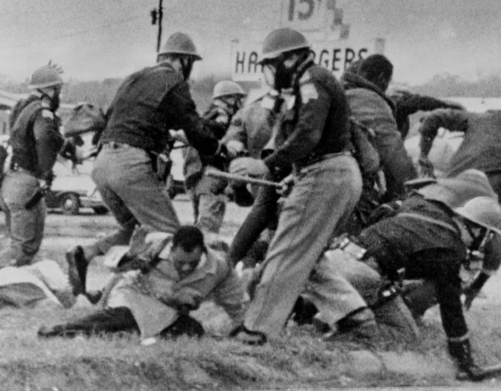
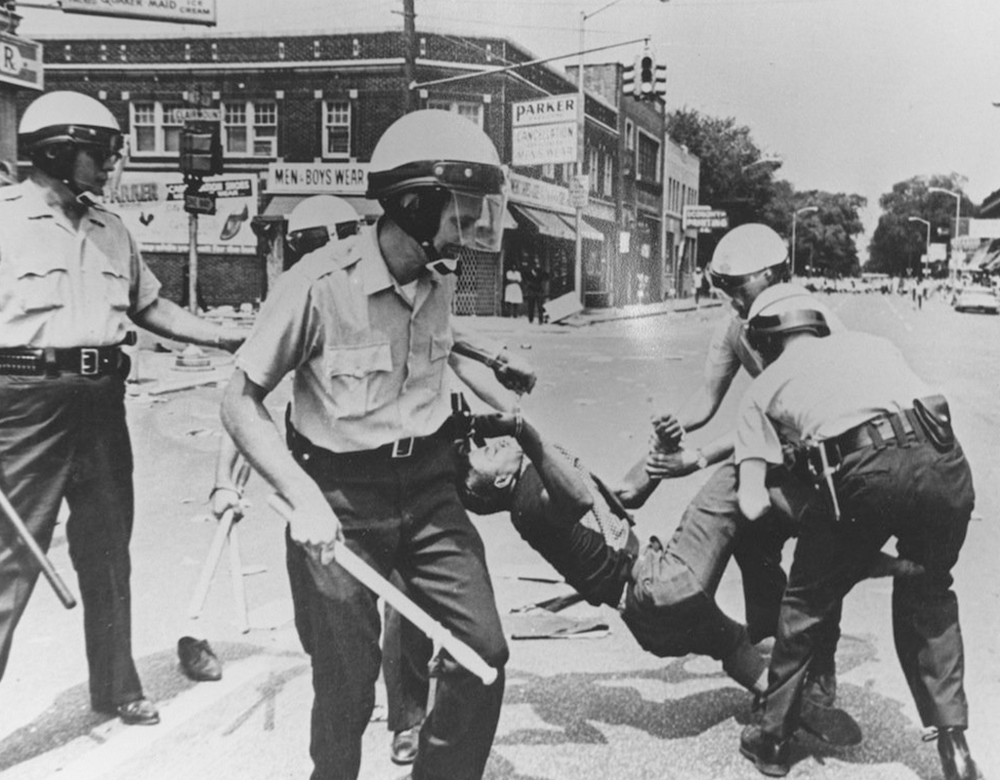
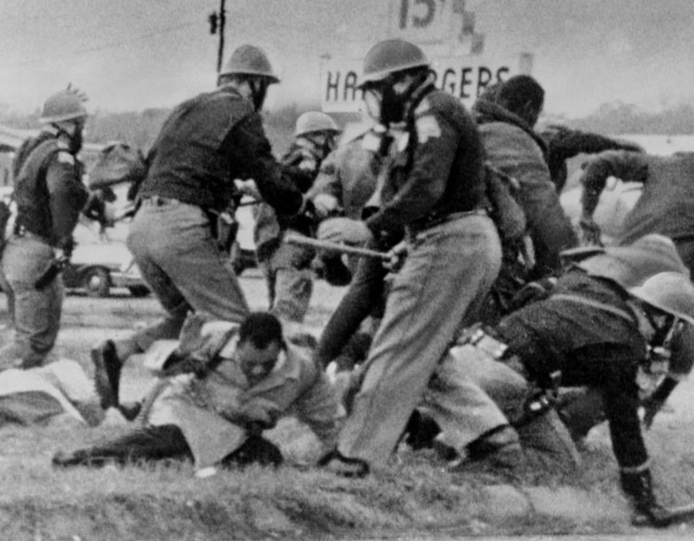

The United States has a sordid history involving racial relations. Some of this history has been manifested in notable cases regarding police brutality. Police brutality is defined as the use of excessive physical assault or verbal assault during police procedures, such as apprehending or interrogating a suspect. Media has played a pivotal role in informing communities of suspected instances of police brutality. Media attention often focuses on the disparate treatment by police based on the race of the suspect.